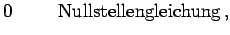

Jede Gleichung mit einer Unbekannten läßt sich auf eine der beiden Normalformen bringen:
f(x)
=

(19.1)
x
=
(19.2)
Die Gleichungen (19.1) und (19.2) seien lösbar. Lösungen sollen mit bezeichnet werden. Zur Gewinnung einer ersten Näherung für versucht man, die zu lösende Gleichung auf die Form f1(x) = f2(x) zu bringen, bei der der Verlauf der Kurven y = f1(x) und y = f2(x) leicht zu übersehen ist.
Beispiel
. Aus dem Kurvenverlauf von y = x2 und ist und ablesbar (s. Abbildung).